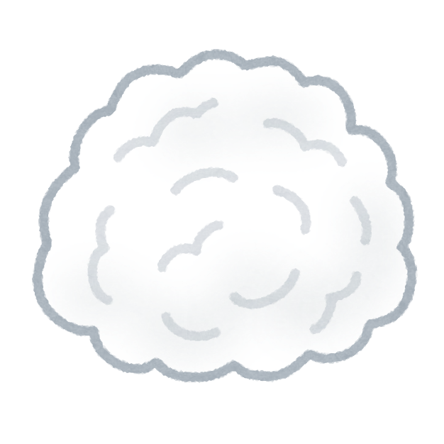

{% extends "layout.html" %}
{% block content %}
<h2>にゃーん(社会性フィルター)</h2>


<a href="https://twitter.com/share?ref_src=twsrc%5Etfw" class="twitter-share-button" data-size="large" data-text="にゃーん(社会性フィルター)" data-url="https://{{ request.host }}/{{cat_image}}" data-show-count="false">はきだす</a>
<script async src="https://platform.twitter.com/widgets.js" charset="utf-8"></script>

<a href="{{url_for('main')}}">まだまだ色々吐き出したい。。</a>

<!--
<div class="dust">
  
</div>
-->

{% endblock %}
